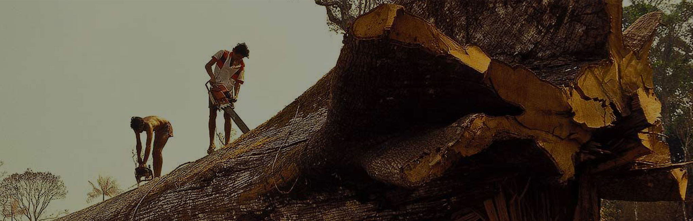
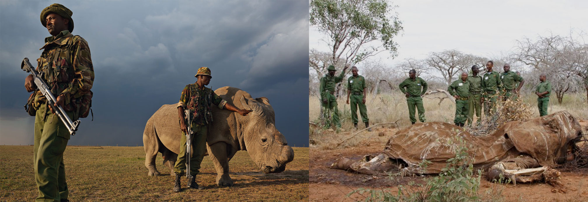
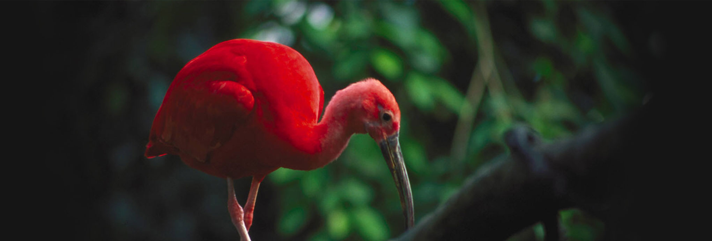
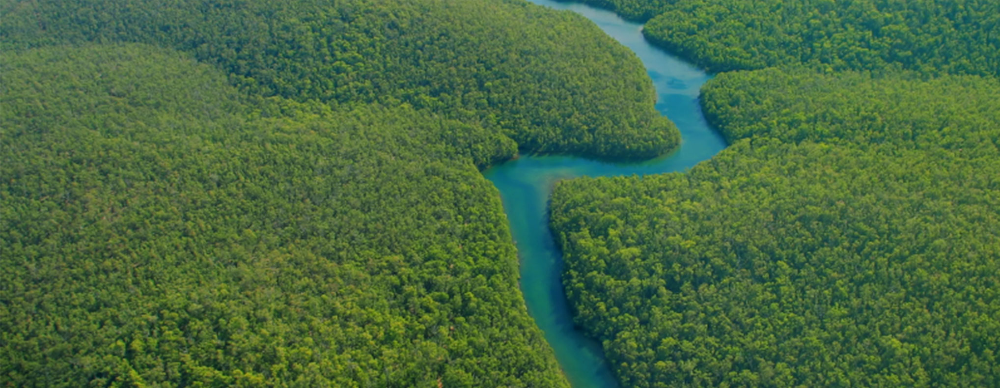
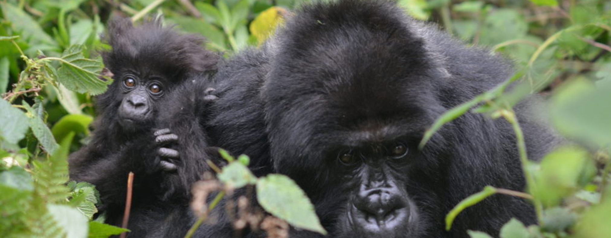
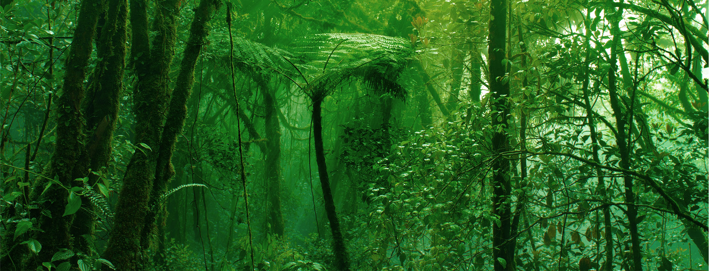

Our Work
Rainforest Connection (RFCx) builds and deploys scalable, open acoustic monitoring systems that can halt illegal
logging and poaching, and can enable biodiversity measurement and monitoring.





PREVENT ILLEGAL DEFORESTATION
Illegal deforestation is a gateway activity to clearing rainforest, one of the primary causes of climate
change. According to the UN up to 90% of logging in tropical rainforests is illegal.
The reason we start with a focus on stopping illegal logging is because, in case after case, we have seen
first hand that if you can protect the trees, you end up protecting everything else.
The RFCx monitoring system gives our partners the opportunity to protect key rainforest areas and respond to
real-time alerts, while sharing large amounts of ecosystem data that help negotiate increased protections in
these areas. In some cases, protecting the perimeter of a rainforest can actually mean protecting everything
behind it.
Saving rainforests is the key to saving our planet.
We are dedicated to putting conservation technologies into the hands of committed partners on-the-ground to
help combat:
- Deforestation which accounts for 17% of all global carbon emissions.
- The greatest species extinction crises since the time of the dinosaurs.
- Historic droughts that affect upwards of 20 million people in major cities in South America such as Sao Paulo (directly related to the destruction of the Amazon rainforest).
- The destruction of Indigenous Reserves which comprise 20% of the Brazilian Amazon rainforest, now increasingly targeted by illegal loggers and poachers because they are still intact.
- Economic losses of GDP $2-5 trillion per year attributed to downgrading rainforest to pasture and less productive land use.

THE APP
EVER WANTED TO HEAR A RAINFOREST IN REAL-TIME?
Download our free app to listen to the sounds of rainforests all over the world.
Immerse yourself in the tropical rains of Ecuador, the chatter of endangered wildlife in Costa Rica,
peaceful mornings in the jungles of Peru, and so much more


Ways you can get involved.
If you have other ideas on how to help – or if you have a project you’re looking for assistance on – feel
free to contact us at contact@rfcx.org.
STOP ANIMAL POACHING
Our goal at Rainforest Connection is to make sure poachers no longer have free reign over the world’s
rainforests. To that end, we use the RFCx system to help our partners recognize patterns of activity related
to poaching, including alerts for trucks, cars and motorcycles being used by poachers in key protected
areas.
Halting poaching helps save animals, forests, and the larger world.
- In Africa we were able to demonstrate on a test basis that protecting and monitoring one key road used by poachers could enable the protection of a large area of rainforest.
- We were able to show patterns of activity related to vehicles and poaching in the protected area after dark and during the weekends.
- The RFCx system helped our partners allocate limited manpower to to target key times and days each month where poaching activities were statistically very high.
- Loss of biodiversity can damage a rainforest habitat to the same degree as climate change and air pollution.
- Illegal bushmeat hunting hampers a rainforest’s ability to disperse the types of seeds it needs to effectively sustain itself.
- The hunting of certain animals helps introduce obscure, dangerous tropical diseases into heavily populated regions of the world.
Ways you can get involved.
If you have other ideas on how to help – or if you have a project you’re looking for assistance on – feel
free to contact us at contact@rfcx.org
- Nature Magazine, June, 2012
- Biotropica, Volume 42, Issue 6, 2010
- Science Magazine, January, 2004
BIO-ACOUSTIC MONITORING
Help us create the world’s biggest shareable, searchable Audio Ark of rainforest sounds and eco-data
A bio-acoustic platform that lets you browse the “worldwide rainforest.”
Every birdcall, insect chirrup, rustle in the leaves, and drop of rain: We’re creating a digital library
that can give scientists instant access to vast troves of raw, acoustic data collected from rainforests
worldwide. By subscribing to our service, your support helps us further incentivize and fund rainforest
protection.
Why gathering real-time data on rainforests is fundamentally important.
- For the first time in history we’re within a stone’s throw of creating the world’s most remarkable data set: A trove of life science and eco-data on a platform that lets scientists compare month over month, year over year changes to our planet’s most endangered ecosystems in order to protect their health.
- The information can be used for land management, policy changes and allocation of limited resources for greater impact.
- In Ecuador we initiated our first proof of concept by monitoring two endangered species of parrots that our partners re-introduced to a key reserve area. Sound/Alerts and patterns of activity help rangers to monitor, support and protect the successful re-introduction of the species.
- 24/7 alerts for the vocalizations of these endangered species have provided local ecologists a trove of data to study and improve outcomes for the reintroduction of key species.
Ways you can get involved.
If you have other ideas on how to help – or if you have a project you’re looking for assistance on – feel
free to contact us at contact@rfcx.org.
"Every minute counts. Real-time awareness means real-time intervention."

"Gorillas could disappear from the congo basin by the 2020."

2010 united nations report
"52 percent of the world's biodiversity is gone."

world wildlife fund